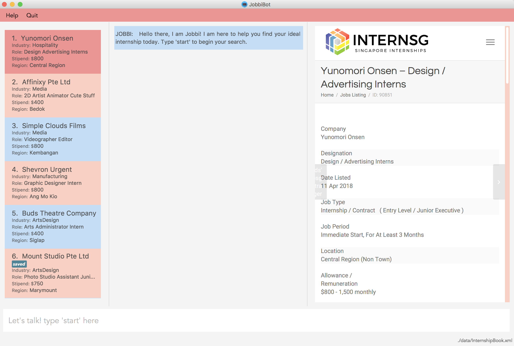

By: Team CS2103-F11-B3 Since: Jan 2018 Licence: MIT
- 1. Introduction
- 2. Quick Start
- 3. Features
- 3.1. Viewing help :
help - 3.2. Start conversation with program :
start - 3.3. Restart conversation with program :
new - 3.4. Find internships by keyword(s):
find - 3.5. Filtering Internship by keyword(s):
filter - 3.6. Sorting Internship by keyword(s):
sort - 3.7. Saving an internship to a Saved Collection :
save - 3.8. Remove a Saved internship from a Saved Collection :
unsave - 3.9. Shows the full Saved Internship Collection :
find savedorfilter saved - 3.10. Selecting an internship :
select - 3.11. Listing all internships :
list - 3.12. Listing entered user commands :
history - 3.13. Undoing previous command :
undo - 3.14. Redoing the previously undone command :
redo - 3.15. Exiting the program :
exit - 3.16. Saving the data
- 3.1. Viewing help :
- 4. Command Summary
- 5. List of Industries
- 6. List of Internship Roles
- 7. List of Skills
- 8. FAQ
1. Introduction
JobbiBot is a desktop Chatbot application for those who prefer to use an interactive app to source for internship opportunities. Hence, JobbiBot is optimized for those who prefer to work with a Command Line Interface (CLI) while still having the benefits of a Graphical User Interface (GUI). If you can type fast, JobbiBot can find the most suitable internship matches faster than traditional GUI apps. Interested? Jump to the Section 2, “Quick Start” to get started. Enjoy!
2. Quick Start
-
Ensure you have Java version
1.8.0_60or later installed in your Computer.Having any Java 8 version is not enough.
This app will not work with earlier versions of Java 8. -
Download the latest
jobbibot.jarhere. -
Copy the file to the folder you want to use as the home folder for your JobbiBot.
-
Double-click the file to start the app. The GUI like the one below should appear in a few seconds.
 -
Type the command
startin the command box and press Enter if you would like to begin a conversation with JobbiBot. -
Alternatively, if you would like to search for an internship directly. Type your command in the command box and press Enter to execute it.
-
Some example commands you can try:
-
help: open the help window -
list: lists all contacts -
save3: save the 3rd contact shown in the current list to a personal Saved Collection -
exit: exits the app
-
-
Refer to Section 3, “Features” for more details of each command.
3. Features
3.1. Viewing help : help
Shows more details of each command and a glossary of industries, roles and skills that the user may refer to in his or her search.
Format: help
3.2. Start conversation with program : start
Initiates the message thread of JobbiBot.
Format: start
3.3. Restart conversation with program : new
Restarts a new message thread of JobbiBot and the previous thread is deleted.
Format: new
3.4. Find internships by keyword(s): find
Finds internships which contains any of the keywords.
Format: find KEYWORD [MORE_KEYWORDS]
Examples:
-
find Data Analyst
Returns any internship withDataorAnalystin its description. -
find Dow Micron Dyson
Returns any internship having names or description matchingDow,Micron, orDyson. -
find Engineering
Returns any internship havingEngineeringin its description. -
find Betsy@gmail.com
Returns any internship having contact emailBetsy@gmail.com. -
find Serangoon
Returns any internship having address or description matchingSerangoonin it.
3.5. Filtering Internship by keyword(s): filter
Filter the internship list according to the given keywords.
Format: filter KEYWORD [MORE_KEYWORDS]
Examples:
-
filter data
Returns any entries containing data. e.g Data Analytics, Data Science -
filter data analytics
Returns only entries containing data and analytics. e.g 'data analytics internship', 'data analytics singapore'
3.6. Sorting Internship by keyword(s): sort
Sorts the internship list according to the given keyword(s).
Format: sort KEYWORD [MORE_KEYWORDS]
Keywords are only limited to the following internship attribute types: Address Email Industry Region Name Role Salary
Examples:
-
sort name
Sorts the internship list according to name attribute. -
sort salary region
Sorts the internship list according to salary first then region.
3.7. Saving an internship to a Saved Collection : save
Saves the specified internship from the internship book.
Format: save INDEX
Examples:
-
list
save 2
Saves the 2nd internship in the internship book. -
find Google
save 1
Saves the 1st internship in the results of thefindcommand.
3.8. Remove a Saved internship from a Saved Collection : unsave
Removes the specified internship from the saved internship collection.
Format: unsave INDEX
Examples:
-
find saved
unsave 2
Removes the 2nd internship in the saved internship collection. -
find Google
save 1
unsave 1
Removes the 1st internship in the results of thefindcommand the saved collection.
3.9. Shows the full Saved Internship Collection : find saved or filter saved
Shows all the internships with a saved tag.
Format: find saved or filter saved
3.10. Selecting an internship : select
Selects the internship identified by the index number used in the last internship listing.
Format: select INDEX
Examples:
-
list
select 2
Selects the 2nd internship in the address book. -
find Singapore Tourism Board
select 1
Selects the 1st internship in the results of thefindcommand.
3.11. Listing all internships : list
Shows a list of all internships in the internship database.
Format: list
3.12. Listing entered user commands : history
Lists all the commands that you have entered in reverse chronological order.
Format: history
3.13. Undoing previous command : undo
Restores the internship database to the state before the previous undoable command was executed.
Format: undo
|
Undoable commands: those commands that modify the internship book’s content ('save' and |
Examples:
-
save 1
list
undo(reverses thesave 1command) -
select 1
list
undo
Theundocommand fails as there are no undoable commands executed previously. -
save 1
unsave 1
undo(reverses theunsave 1command)
undo(reverses thesave 1command)
3.14. Redoing the previously undone command : redo
Reverses the most recent undo command.
Format: redo
Examples:
-
save 1
undo(reverses thesave 1command)
redo(reapplies thesave 1command) -
select 1
redo
Theredocommand fails as there are noundocommands executed previously. -
save 1
unsave 1
undo(reverses theunsave 1command)
undo(reverses thesave 1command)
redo(reapplies thesave 1command)
redo(reapplies theunsave 1command)
3.15. Exiting the program : exit
Exits the program.
Format: exit
3.16. Saving the data
Internships data are saved in the hard disk automatically after any command that changes the data.
There is no need to save manually
4. Command Summary
-
Help :
help -
Start JobbiBot :
start -
Refresh JobbiBot Conversation:
new -
Find :
find KEYWORD [MORE_KEYWORDS]
e.g.find Analytics Engineering -
Filter :
find KEYWORD [MORE_KEYWORDS]
e.g.filter Marketing Singapore -
Save :
save INDEX
e.g.save 2 -
Unsave :
unsave INDEX
e.g.unsave 2 -
Show Saved Collection :
find savedorfilter saved
e.g.find savedorfilter saved -
Select :
select INDEX
e.g.select 3 -
List :
list -
Undo :
undo -
Redo :
redo -
Exit :
exit
5. List of Industries
This serves as a non-exhaustive lists of skills that users can search for
-
Arts and Design
-
Automotive
-
Banking and Finance
-
Biomedical Sciences
-
Community and Social Services
-
Consultancy
-
Education
-
Entrepreneurship and Businesses (General)
-
Fashion and Retail
-
Food and Beverages
-
Healthcare Services
-
Hospitality
-
Legal
-
Media and Communications
-
Military and Protective Services
-
Public Relations
-
Research
-
Social Enterprise
-
Technology
-
Veterinary Services
6. List of Internship Roles
This table is a non exhaustive list of potential internship roles that users can search for. Internship roles are organised by industry but not all industries are listed in this table.
| Industry | Internship Role |
|---|---|
Arts and Design |
Animator |
Film Editor |
|
Graphic Designer |
|
Photographer |
|
Videographer |
|
Banking and Finance |
Accountant |
Audit Assistant |
|
Corporate Security Analyst |
|
Financial Planner / Advisory |
|
Private Equity Analyst |
|
Risk Management |
|
Wealth Management Analyst |
|
Consultancy |
Human Resource Consultant |
Operations Consultant |
|
Sales Consultant |
|
Technology Consultant |
|
Wealth Management Consultant |
|
Education |
Teacher |
Engineering |
Aerospace Engineer |
Electrical Engineer |
|
Manufacturing Engineer |
|
Mechanical Engineer |
|
General, Business and Entrepreneurship |
Business Analytics |
Business Development |
|
Market Researcher |
|
Operations |
|
Sales |
|
Product Manager |
|
Healthcare |
Patient Support |
Patient Advocate |
|
Hospitality and Tourism |
Customer Experience |
Events Planning and Management |
|
Guest Services and Relations |
|
Sustainability |
|
Legal |
Legal Counsel |
Media and Communication |
Advertising / Content Creator |
Digital Marketer |
|
Editor |
|
Photojournalist |
|
Public Relation |
|
Social Media |
|
Writer |
|
Retail |
Buyer |
Merchandiser |
|
Shop Assistant |
|
Technology |
Android Developer |
Computer Hardware Engineer |
|
Data Visualisation Engineer |
|
Data Scientist |
|
Full Stack Developer |
|
Information Security Analyst |
|
iOS Developer |
|
IT Support |
|
Machine Learning Researcher |
|
Mobile Developer |
|
.NET Developer |
|
Networks Engineer |
|
Software Engineer |
|
Software Quality Assurance Engineer |
|
Unity3D (AR/VR) |
|
User Experience Designer |
|
User Interface Designer |
|
Web Development |
7. List of Skills
This serves as a non-exhaustive lists of skills that users can list in their conversation with Jobbi.
-
Accountancy
-
Business Development
-
Consultancy
-
Data Analytics
-
Design
-
Electrical Engineering
-
Event Planning and Management
-
Finance
-
Full Stack Software Engineering
-
Human Resource
-
Logistics and Procurement
-
Machine Learning
-
Marketing
-
Mechanical Engineering
-
Mobile Development
-
Operations
-
Product Management
-
Public Relations
-
Purchasing
-
Sales
-
Software Engineering
-
User Experience Design
-
User Interface Design
8. FAQ
Q: How do I update the internship list to the most updated version?
A: Download the database from the www.dummywebsite.com and replace the InternshipBook.xml file in main\data.